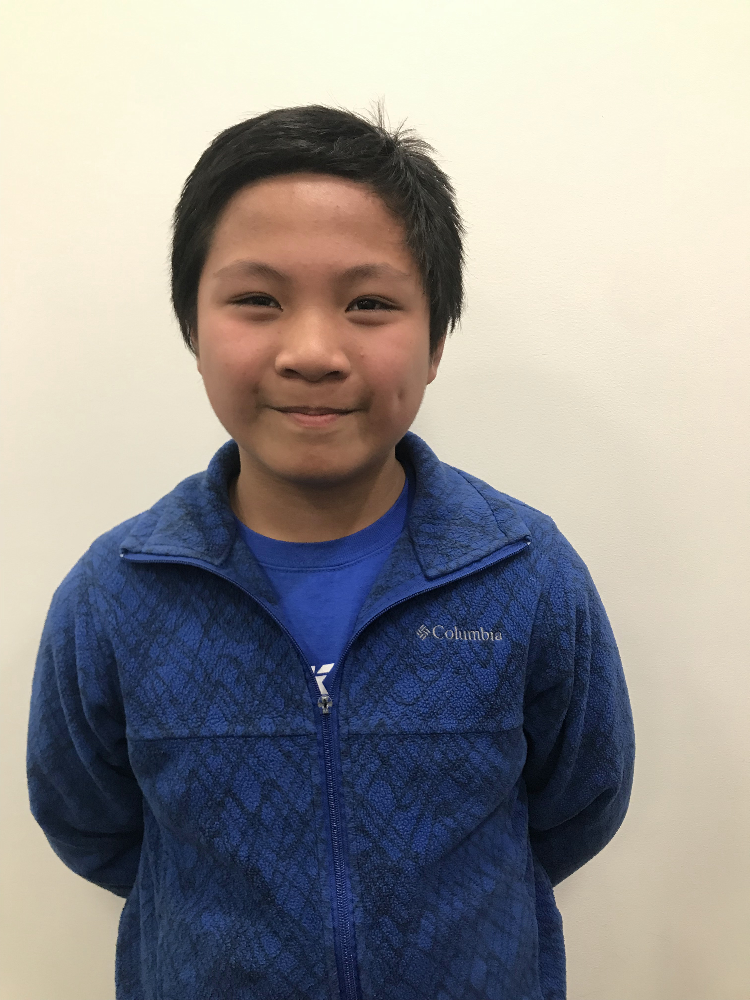

Power Scare Fll
Your source of power, scares, and fruit, since 2018
Members
Alex is a good person who made this website. When he is not programming or doing FLL, he enjoys, drawing, playing the piano and accordion, and acting. His favorite parts of FLL are building the robots, and researching the research (he can also be funny at times).Connor is a Homo Sapien Sapien[Citation Needed]. When he is for some reason not doing FLL, he likes to build computers, fly his drone, and build R/C cars. His favorite part of FLL is programming the robots
David likes gaming, and playing the piano. He also has two siberian kittens. His favorite part of FLL is building
Devon didn't want to give me a bio.
Mason is the oldest sibiling in his family. He likes FLL, but when he is not doing FLL, he plays soccer, builds with LEGO® and plays minecraft. His favorite part of FLL is making friends.
 Pearl likes to be outside, draw, and met new people. When she is actually doing FLL, she enjoys building and coding the robots.
Pearl likes to be outside, draw, and met new people. When she is actually doing FLL, she enjoys building and coding the robots.
Willem failed to give me a bio.
Yasani is half Puerto Rican and half black and is 12 years old. She loves to play sports, draw, and hang out with friends and family. Her favorite part of FLL is constructing the Go-Kart track as part of our solution for our research.
Zach likes to listen to 80s music. He also likes computer programming, pizza, and a very fluffy puppy (who is actually five years old). He likes coding the best out of everything he does at FLL.
Coaches
 Andrew likes to make robots and websites. He also likes to climb mountains and play guitar in a band.
Andrew likes to make robots and websites. He also likes to climb mountains and play guitar in a band.
Jacob is a grown up[Citation Needed], but is still awesome.
Helpers
Sue helped with research. Jeff helped with shooting troubles.
Jeff helped with shooting troubles.